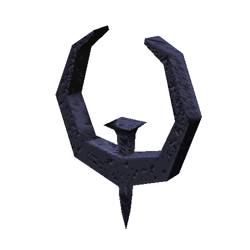
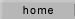
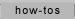
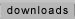
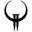

IceQuake



Games
Half-Life
Half-Life + Opposing Force
Max Payne
Max Payne
Miscellaneous
Ethnic Cleansing
ZOG's Nightmare
ZOG's Nightmare 2
Need For Speed
Need For Speed Underground 2
Need For Speed Most Wanted + Widescreen Patch
Quake
Quake
Quake II
Quake III Arena
Serious Sam
Serious Sam: The First Encounter
Demos and betas
Diablo Demo
Diablo Prerelease Demo
Need For Speed Underground Demo
Need For Speed Underground 2 Demo
Need For Speed Carbon Demo
Quake Shareware
QTest1
Quake Beta 0.8 (otherwise known as Quake Beta 3)
Q2Test
Quake III Arena IHV Build
Serious Sam: The First Encounter Alpha
Sam Test 1
Serious Sam: The First Encounter Demo
Patches
Flight Simulator 9.1 Patch
Max Payne 1.05 Patch
Max Payne 1.05 No-CD Patch
Max Payne Sound Patch v1.12 (for newer OSes)
Quake CD Soundtrack (For use with the Mark V source port)
Quake II CD Soundtrack (For use with the Yamagi Quake II source port)
Quake III Arena 1.32 Point Release
Serious Sam 1.05 Patch (US)
Benchmarks
3DMark
3DMark99
3DMark2000
3DMark2001
3DMark03
3DMark Keys
Other
Final Reality
 Half-Life Half-Life
Half-Life Half-Life